TempoSphere

¿Qué se hizo?
Titulo
La idea
Sketch

Schedule

Research
The
Datos
I
¿Por qué se realizó?
I
Materiales
- 3D
Costos
Lista materiales
| Material | Cantidad usada | Supplier | Costo unitario | Total |
|---|---|---|---|---|
| NEMA 17 Stepper Motor | 4 | Steren | $13.39 | $53.56 |
Funciones
- I
- Motivations: Select an open license to contribute to collective knowledge, facilitate learning, and encourage innovation within the maker community.
This work is licensed under a
Creative Commons (4.0 International License)Attribution-ShareAlike
✖ | Sharing without ATTRIBUTION
✔ | Remix Culture allowed
✔ | Commercial Use
✔ | Free Cultural Works

7-Segment Display Clock Instructions
To create the clock, you will need to download the 7_Segment_Display.zip file for the 7-segment display, unzip it, and 3D print the following parts (with quantities in parentheses):
3D Printed Components:
- (2) - BODY_2-DIGIT_v2.1_standardDepth
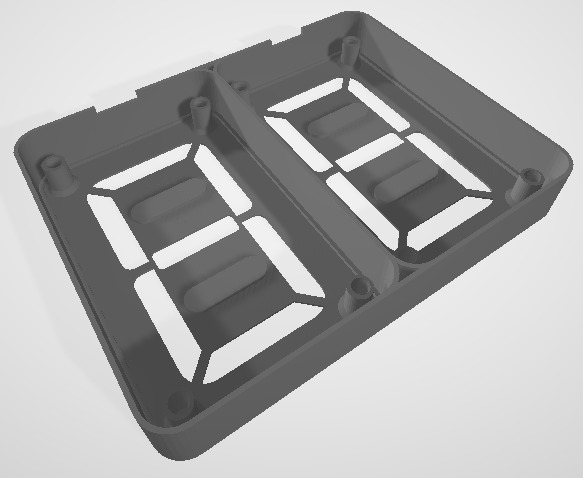
- (4) - SEG_PLATE
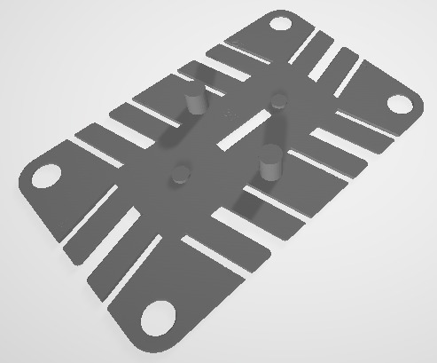
- (4) - MID_PLATE
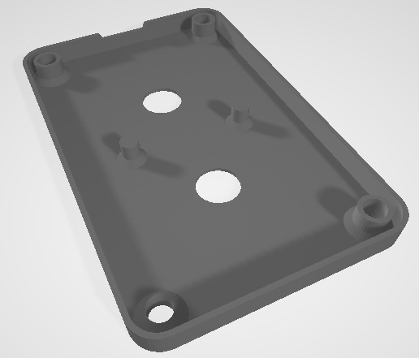
- (16) - SCREW_v2.1
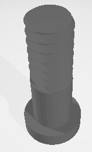
- (8) - SEG A
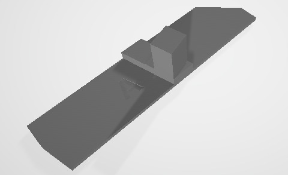
- (8) - SEG B
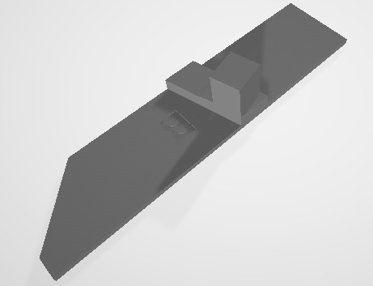
- (8) - SEG C
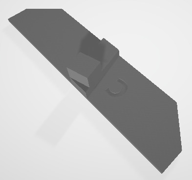
- (4) - SEG D
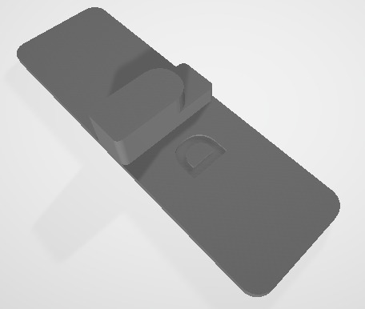
- (8) - FOLLOWER A
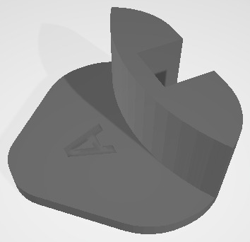
- (8) - FOLLOWER B
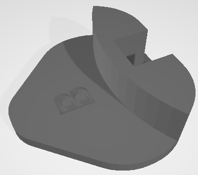
- (8) - FOLLOWER C
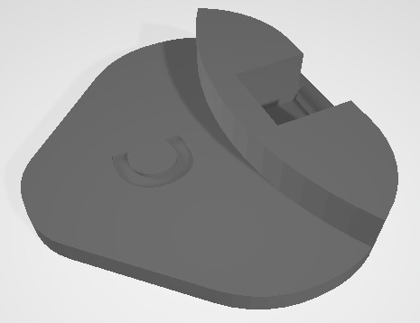
- (4) - CAM A1
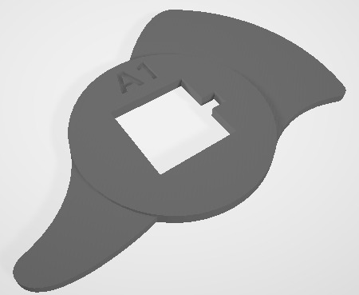
- (4) - CAM A2
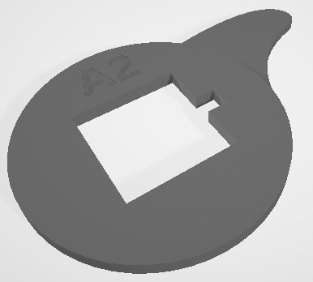
- (4) - CAM B1
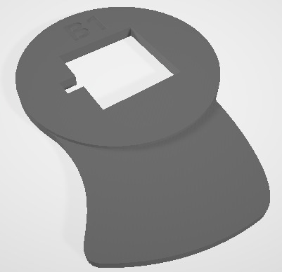
- (4) - CAM B2
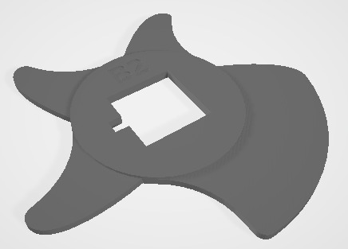
- (4) - CAM C1
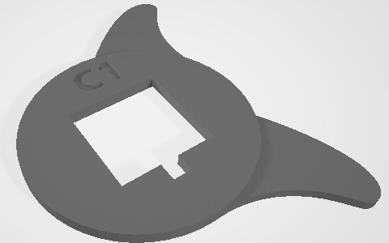
- (4) - CAM C2
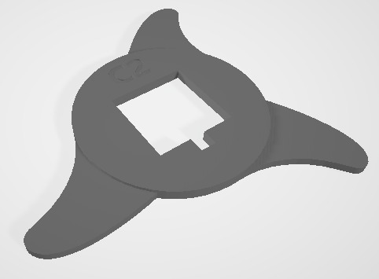
- (4) - CAM D1
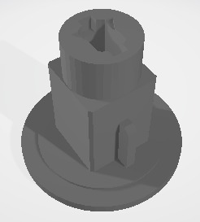
- (4) - CAM D2
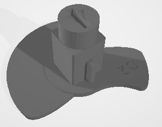
- (8) - STACK_GEAR
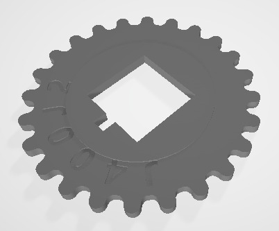
- (8) - SYNC_GEAR
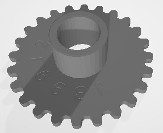
- (4) - Coupling for direct motor connection
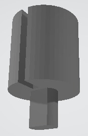
Download the zip here 7_Segment_Display.zip
Material and Print Settings:
- Material: PLA
- Infill: 100%
- Layer Height: 0.2mm
- Supports: No
- Based on a 0.4mm nozzle
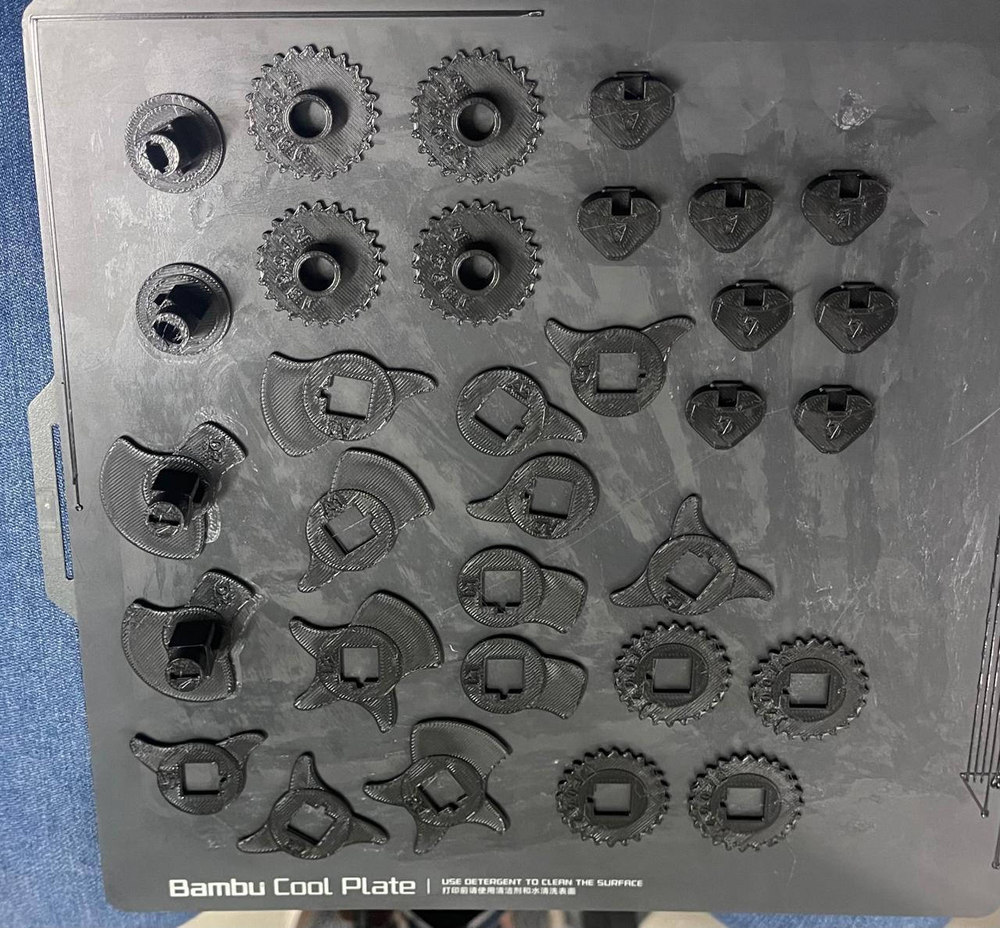
Non-3D Printed Components:
- (8) - Type #19 rubber band (2mm x 90mm)
- (16) - Type #31 rubber band (3mm x 60mm)
- (8) - Type #19 rubber band (2mm x 90mm)
- (16) - Type #31 rubber band (3mm x 60mm)
To assemble each mechanical 7-segment display, you can follow the Flower-3D tutorial. Keep in mind that you only have the parts I provided for download 7_Segment_Display.zip, and they are not the same quantity as explained in the video. You will finish assembling when you reach minute 9:32 of the video by placing the screws in the corresponding holes. Another important point is the way the bands are placed for the segments. In my design, you use 3 bands to reduce resistance. It should look like this:


In the video, you can see that I used glue because, as the gears are placed separately, when turning, the numbers tend to separate, causing the numbers to not be visible. Another important point is that the sanding process is essential because if there are any irregularities between the pieces, they do not move smoothly, making it more difficult for the motor to move everything.
Important note: I recommend using some type of lubricant for the gears and the segment flowers, as reducing the resistance on the gears will make it easier for the motor to move the necessary steps to advance to the next number. Each number corresponds to a 20° rotation.
If you need some help with 3D printing, you can refer to my Week 5, which covers 3D Scanning and Printing.
PCB
For the PCB design, I arranged it to accommodate the Xiao ESP32C3, four A4988 stepper motor driver modules, PCF8574 I2C GPIO Expander Module, OLED screen, RTC DS3231 module, and a button. I used KiCad to design my PCB and the ROLAND SRM-20 machine to create the PCB on a 10 cm x 15 cm phenolic board.
{kind=link}
Below is the way they are connected:

If you need more help on how to use the ROLAND SRM-20 to make the PCB, you can refer to my Week 4. Alternatively, if you want to redesign the PCB and need assistance with KiCad, you can check out my Week 8.
Laser Cutting
For this part of the project, I used the FAB LAB Puebla Laser Cutters CFL-CMA1200. Below, you will find the quantity of pieces you need to cut from each of the documents:
- (1) Atrás
- (1) Frente
- (2) Lateral
- (3) Medio
- (2) Tapas
Download the zip here. Carcasa.zip
Remember to place the motors in the middle piece. If you have any questions about how to assemble it, I have included the Assembly here. Ensamblaje_Carcasa.SLDASM

If you need more help with laser cutting, you can go to my Week 3 for support.
Programming
For the programming part, since we are using the RTC DS3231 module, the first thing we need to do is insert a 3V battery into the module. After connecting everything, we upload the Reajuste_HORA.ino program. This step is crucial to set the current time in the module's memory. With this setup, even if the PCB is disconnected from the computer or its power source, the module won't forget the time as it has its own battery. The code was modified from ChepeCarlos.
Afterwards, if you want to test that all your motors and the screen are working 100%, you can upload the following code: Pantalla_RTC_Motores_Pruebas.ino.
With the following program, you can start counting along with the Pomodoro method by pressing the button.
Contador.inoFor the weather part using an API, the first step is to choose the data source. In this case, I used the OpenWeather API. The first code you should test is WiFi.ino. Enter your internet network name and password to verify that it works.

Once it has worked, you can now try loading the Weather.ino code, where you will be able to see the temperature of the requested location and the weather description in the serial communication. For this part, it's important that you download the ArduinoJson library.
If yo want to see the API on acction yo can do whit this program: Api_pantalla.ino